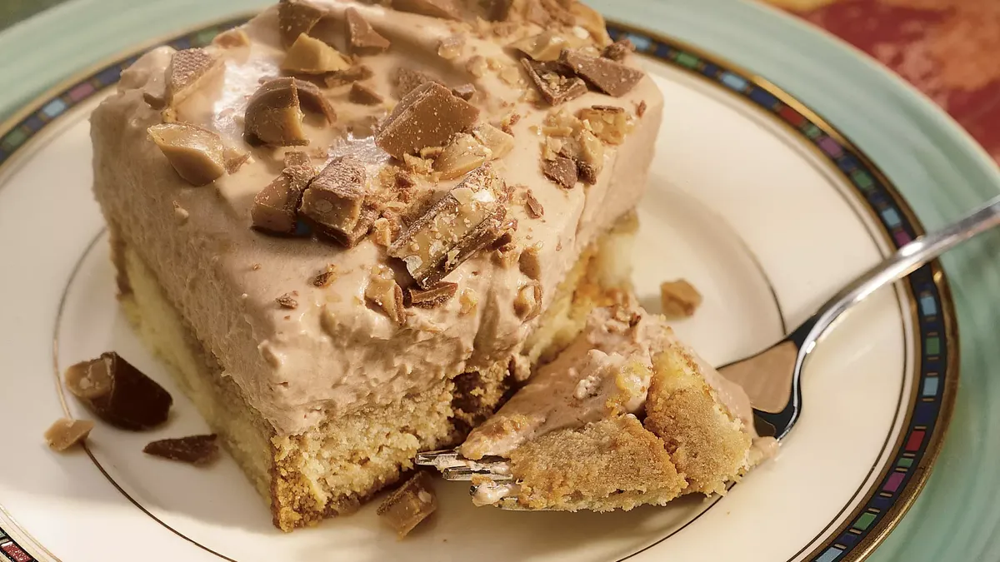

Tiramisu Toffee Dessert

Description
This is a nice version of the popular Italian pick-me-up dessert. The toffee candy in this recipe adds a delightful crunchiness to the smooth creamy whipped cream quality of an already perfect dessert.
Ingrediants
- frozen pound cake
- brewed coffee
- cream cheese
- white sugar
- whipped cream
- chocolate bars
Steps
- Arrange cake slices on bottom of a rectangular 11x7 inch baking dish, cutting cake slices if necessary to fit the bottom of the dish. Drizzle coffee over cake
- Beat cream cheese, sugar, and chocolate syrup, in a large bowl with an electric mixer on medium speed until smooth. Add heavy cream; beat on medium speed until light and fluffy. Spread over cake. Sprinkle with chocolate-covered toffee candy.
- Cover and refrigerate for at least 1 hour, but no longer than 24 hours, to set dessert and blend flavors.